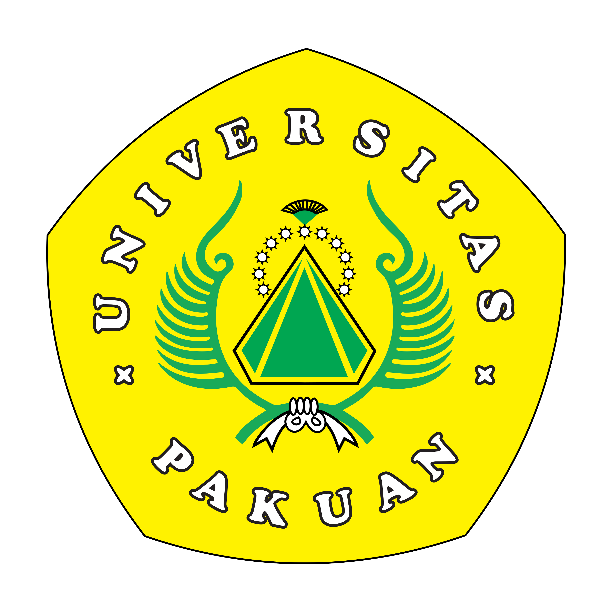
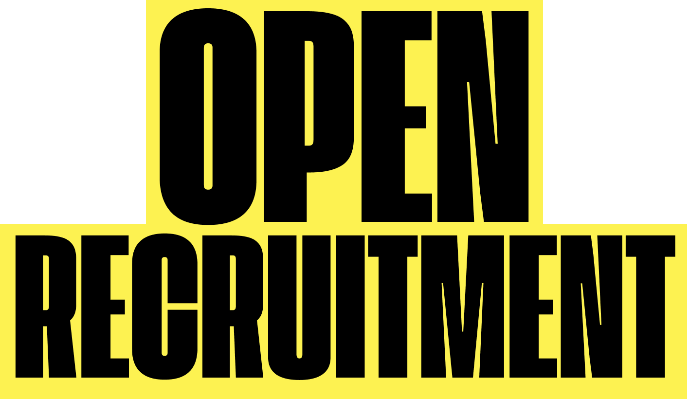
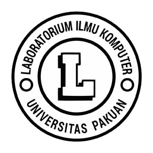
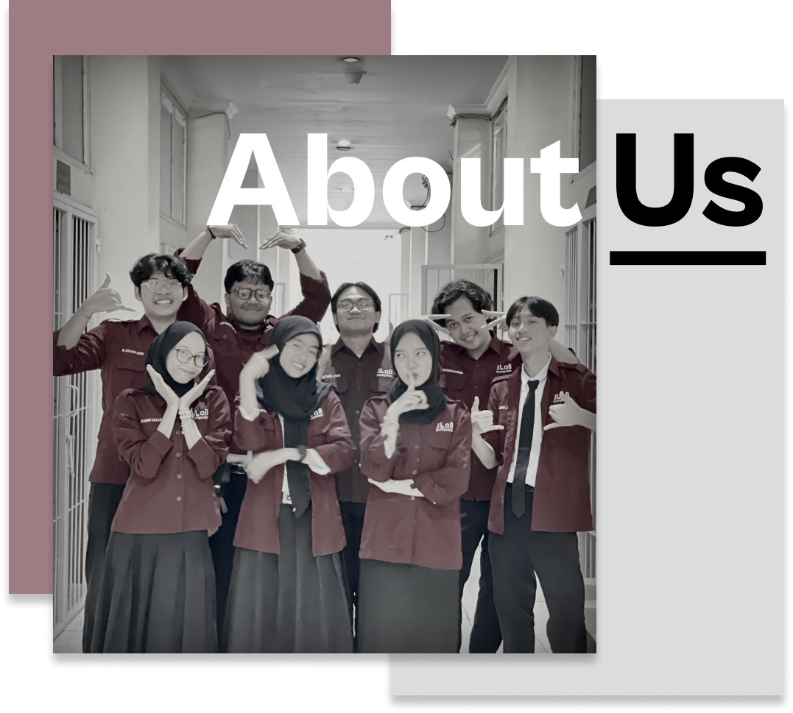

MAROON LABKOM



Scroll Me


Siapa Kami?
Di setiap sesi praktikum Ilmu Komputer, hadir sosok-sosok yang tak hanya membimbing, tapi juga menjadi jembatan antara teori dan praktik.
Kami adalah Asisten Laboratorium Komputer yang terdiri dari mahasiswa terpilih yang siap membimbing kegiatan praktikum dalam civitas akademik Universitas Pakuan Bogor
Tim kami dikenal sebagai MAROON , sebutan yang kami dapatkan dari warna seragam khas yang kami kenakan.